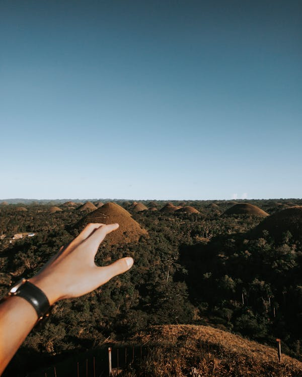
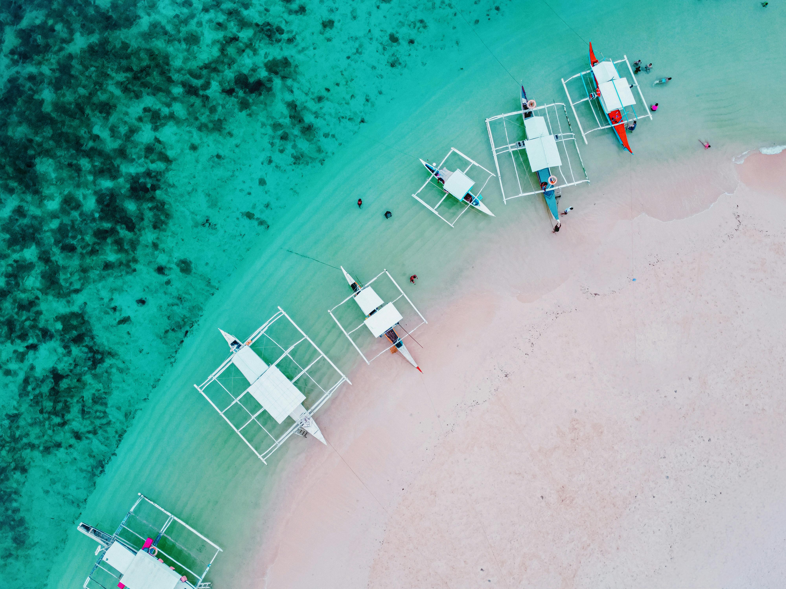
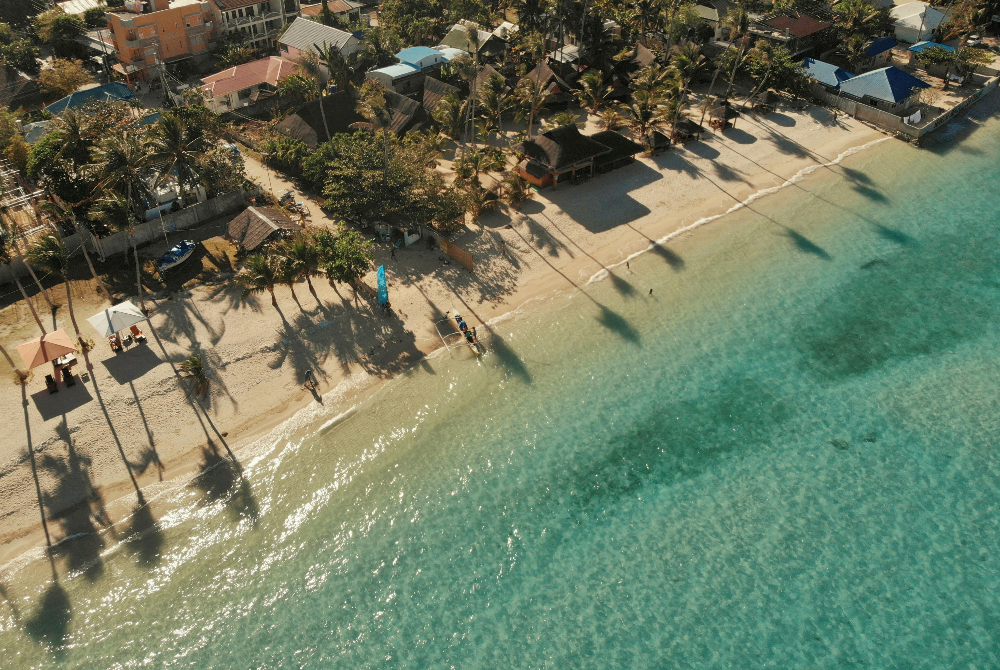
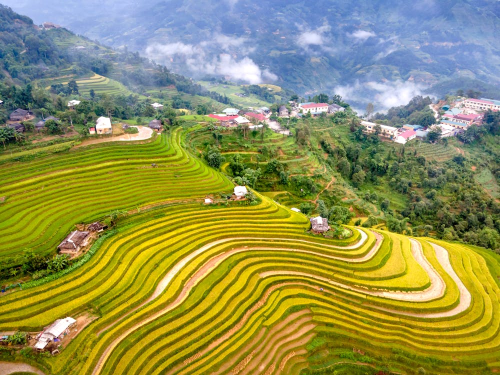

- Welcome
- to the
- Philippines
Philippines' Top Destination
-

- Boracay is a small island in the Philippines' Western Visayas region, known for its stunning white-sand beaches and crystal-clear waters. Located in the province of Aklan, it is approximately 315 kilometers south of Manila. The island spans about 7 kilometers in length, with its narrowest point only about 1 kilometer wide. Boracay gained international attention in the 1970s and rapidly developed as a major tourist destination in the 1980s. White Beach, its most famous beach, is often considered one of the best beaches in the world. The island also offers other attractions such as Puka Shell Beach, Bulabog Beach, and the panoramic views from Mount Luho. Tourism is the backbone of Boracay's economy, drawing millions of visitors each year. Despite its small size, Boracay has a vibrant nightlife with numerous bars, restaurants, and clubs. In 2018, the Philippine government temporarily closed the island for six months to address environmental issues and rehabilitate its natural beauty. Today, Boracay continues to thrive as a premier destination, balancing tourism with sustainable practices.
-

Bohol (Chocolate hills)
- Bohol is a picturesque island province located in the Central Visayas region of the Philippines. Known for its natural beauty, Bohol is home to the famous Chocolate Hills, a geological formation of over 1,200 conical hills that turn brown in the dry season, resembling chocolate mounds. The province also boasts pristine beaches and crystal-clear waters, particularly around Panglao Island, a popular spot for diving and snorkeling. Bohol's history dates back to pre-colonial times when it was inhabited by indigenous peoples and later became a significant trading hub. In 1565, Spanish explorer Miguel López de Legazpi and Datu Sikatuna, a local chieftain, conducted the Blood Compact (Sandugo), symbolizing friendship and alliance. The island is also home to the Philippine tarsier, one of the world's smallest primates, which can be seen at the Tarsier Sanctuary in Corella. The centuries-old Baclayon Church, a National Cultural Treasure, is a testament to Bohol's rich colonial past. Boholanos are known for their hospitality and vibrant cultural traditions, including the annual Sandugo Festival celebrating the historic Blood Compact. Today, Bohol continues to captivate visitors with its unique blend of natural wonders, historical landmarks, and warm local culture.
-

Siargao
- Siargao, a tear-drop shaped island in the Philippines, is renowned for its stunning white-sand beaches, crystal-clear waters, and world-class surfing spots. Located in the province of Surigao del Norte, it has gained international fame primarily for Cloud 9, a surfing break that hosts annual competitions drawing surfers from around the globe. Historically, Siargao was a relatively unknown destination, with its local economy relying on fishing and copra (dried coconut) production. However, the island's discovery by surfers in the 1980s marked the beginning of its transformation into a tourism hub. The island's history is rich with the cultural influences of its early settlers, including the indigenous Lumad people, and later, Spanish colonizers in the 16th century. Siargao's lush landscapes, which include mangrove forests and the largest contiguous mangrove stand in the Philippines, the Del Carmen Mangrove Reserve, showcase its biodiversity. Besides surfing, the island offers activities like island hopping, diving, and exploring hidden lagoons and caves. The annual Siargao International Surfing Cup has played a significant role in boosting tourism and raising global awareness of the island.
-

Cebu
- Cebu, situated in the central Philippines, holds a pivotal role in the country's history as the site where Ferdinand Magellan first landed in 1521, beginning Spanish colonization. Despite Magellan's defeat and death at the hands of Lapu-Lapu on Mactan Island, Spanish influence grew, making Cebu a major trading hub in Asia during the colonial era. This heritage is preserved in landmarks like Magellan's Cross and the Basilica Minore del Santo Niño, home to the revered Santo Niño de Cebu. Today, Cebu City is a bustling urban center known for its economic dynamism and cultural diversity. It boasts stunning natural attractions such as the white sand beaches of Mactan and the picturesque Kawasan Falls. The Sinulog Festival, held annually in January, draws thousands for its vibrant street parades and religious processions, honoring the Santo Niño. With its rich blend of history, culture, and natural beauty, Cebu continues to be a magnet for tourists seeking both adventure and cultural immersion in the Philippines.
-

Banaue Rice Terraces
- The Banaue Rice Terraces, located in the northern Philippines, are often referred to as the "Eighth Wonder of the World" for their breathtaking beauty and engineering ingenuity. Carved into the Ifugao mountains over 2,000 years ago by ancestors of the indigenous Ifugao people, these terraces are a testament to ancient agricultural practices and sustainable land use. They are fed by an ancient irrigation system that channels water from the rainforests above, sustaining rice cultivation to this day. The terraces stretch thousands of feet across the mountainside, resembling giant steps reaching towards the sky. They are not only a marvel of human creativity and labor but also a UNESCO World Heritage Site, recognized for their cultural significance and preservation efforts. For the Ifugao people, the terraces are not just a source of livelihood but a sacred landscape intertwined with their spiritual beliefs and traditional practices.